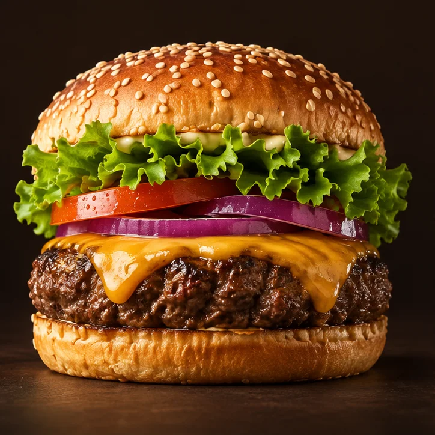
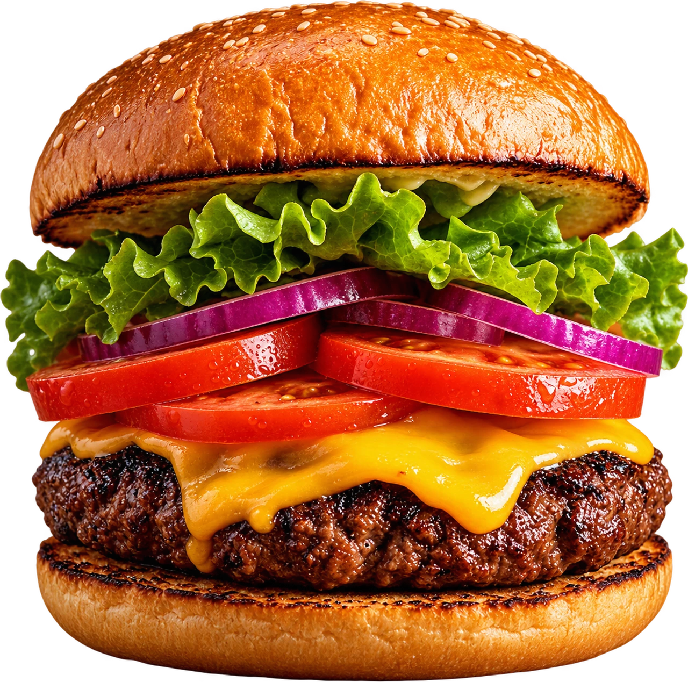
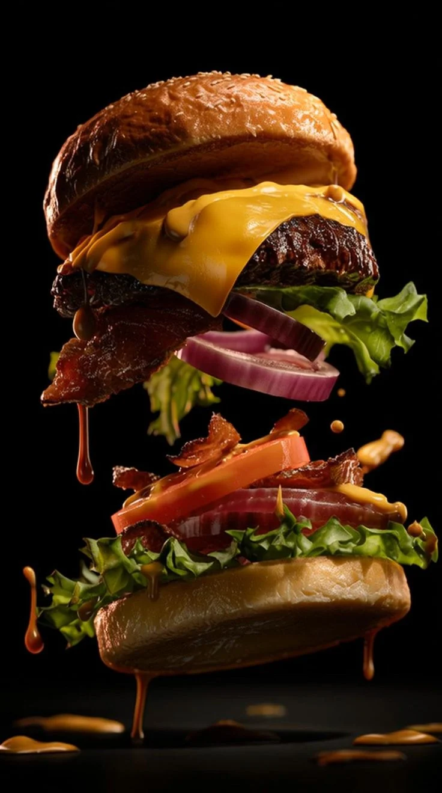

Brasa Clássico
Pão de gergelim, hambúrguer bovino, cheddar, alface, tomate, cebola roxa e molho da casa.
180 g de carne
R$ 29,90
Carne na chapa, cheddar derretido e pão tostado. Escolha seu hambúrguer, acrescente as batatas e prepare a primeira mordida.


Na Brasa, o hambúrguer vem primeiro: pão tostado, carne na chapa e ingredientes que combinam. Escolha seu favorito e conte como você gosta.
O tostado do pão, a suculência do hambúrguer e o frescor dos vegetais. Tudo tem seu lugar.
Escolha o favorito e deixe suas preferências nas observações. A equipe confirma as adaptações antes do preparo.
Avaliações de clientes.
Adicione seus itens à sacola, confira as quantidades e informe suas preferências. Ao finalizar, o resumo vai para o WhatsApp da casa. A equipe confirma disponibilidade, valor final e prazo. Nesta demonstração, você pode copiar o resumo sem enviar.
A sacola permite escolher retirada ou entrega. Região atendida, taxa de entrega e prazo devem ser confirmados com a equipe antes do pagamento.
O cardápio demonstrativo inclui o Verde Brasa, com grão-de-bico e cogumelos. Ser vegetariano não significa ser vegano ou livre de alergênicos. Consulte ingredientes e condições de preparo com a equipe.
Sim, você pode indicar a preferência no campo de observações da sacola. Adaptações, possíveis adicionais e restrições alimentares precisam ser confirmados pela equipe.
Informe na sacola se prefere Pix, cartão ou dinheiro. A equipe confirma as opções disponíveis. Nenhum pagamento é processado neste site.
Uma pausa na rotina. Uma boa conversa.
E um burger para acompanhar.
Endereço a ser divulgado.
Horários a serem divulgados.
Peça uma sugestão, tire uma dúvida ou escolha seu favorito.